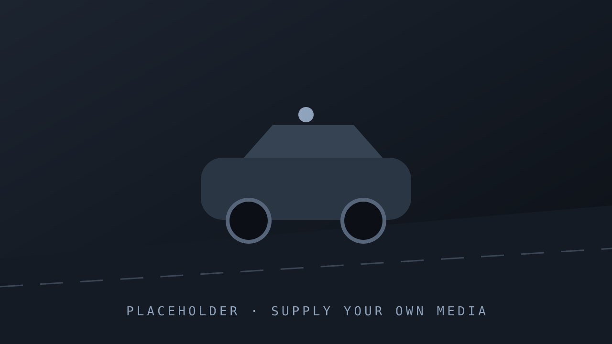
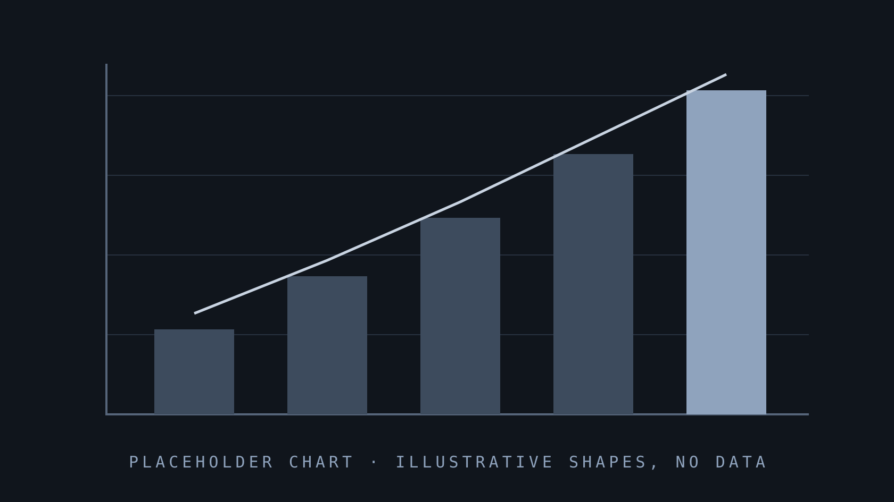
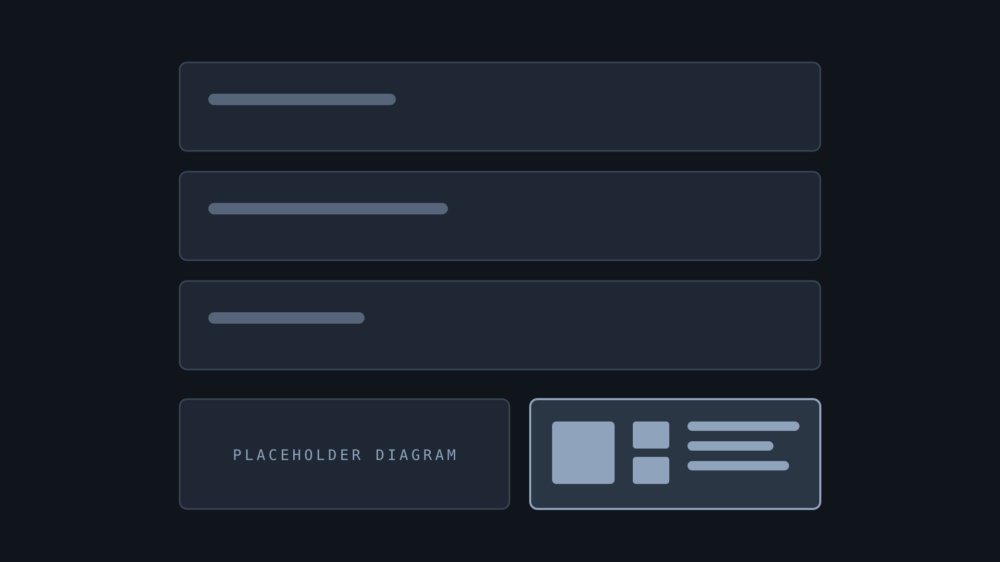

الروبوتاكسي لا يعتمد على شريحة واحدة فقط
تريد NVIDIA أن تكون موجودة في كل مرحلة من بناء السيارة الذاتية
كل برنامج روبوتاكسي رئيسي يعمل تجاريا اليوم يستخدم منظومتها
بحسب NVIDIA: في التدريب أو المحاكاة أو داخل السيارة، أو مزيج منها
منظومة من ثلاثة حواسيب
- 1التدريب: NVIDIA DGX
- 2المحاكاة: Omniverse و Cosmos
- 3داخل السيارة: NVIDIA DRIVE
المحاكاة: Omniverse و Cosmos
إعادة بناء المواقف النادرة وتوليد آلاف التنويعات للتحقق قبل النشر
المصدر: NVIDIA

داخل السيارة: DRIVE Hyperion

منصة جاهزة للروبوتاكسي مع DRIVE AGX
14
كاميرا في منصة DRIVE Hyperion
إلى جانب 9 رادارات و3 ليدار و12 مستشعرا فوق صوتي
حاسوبان من المنظومة
التدريب
حاسوب DGX يدرب نماذج القيادة على بيانات الأسطول
داخل السيارة
منصة DRIVE Hyperion بحاسوب DRIVE AGX Thor مزدوج
منالتدريبوالمحاكاةإلىالحوسبةداخلالسيارة
الخلاصة: NVIDIA في كل الطبقات
تغطية مستقلة

المصدر: NVIDIA